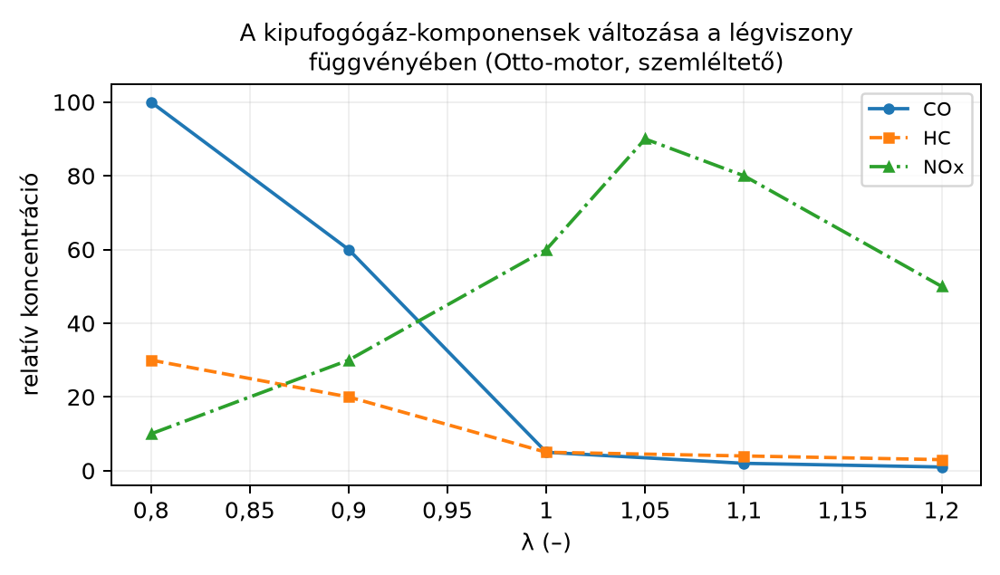

A kipufogógáz összetételének és a károsanyag-képződésnek a megértése nélkül nem tudunk célzottan hibát keresni sem a lambdaszabályozásban, sem az EGR-rendszerben. A műszaki vizsgán megbukó autó gyakran éppen azért bukik meg, mert a szerelő nem tudja, hogy a magas CO miért dús keverékre, a magas NOx miért szegény keverékre vagy hibás EGR-re utal.
Az alábbi diagram azt mutatja, hogyan változik a három fő szabályozott szennyező komponens koncentrációja a légviszony függvényében egy Otto-motor esetén.

Az ábra olvasása. Dús keveréken () a levegőből származó oxigén nem elég a benzin teljes elégetéséhez, ezért a szén-monoxid (CO) és az elégetlen szénhidrogén (HC) koncentrációja magas, az NOx viszont alacsonyabb marad, mert a hőmérséklet ugyan magas, de kevés az oxigén. Szegény keveréken () éppen fordítva: a CO és a HC lecsökken, az NOx viszont a magas hőmérséklet és a bőséges oxigén miatt megemelkedik, majd nagyon szegény keveréken már a hőmérséklet csökkenése miatt ismét visszaesik. Ez az összefüggés az alapja annak, hogy miért kell az Otto-motoros utókezeléshez a keveréket környékén tartani.
Definíció. (Légviszony,
)
A légviszony a ténylegesen bejuttatott levegő és a tüzelőanyag aránya
osztva a sztöchiometrikus égéshez szükséges aránnyal:
Benzin esetén a sztöchiometrikus levegő–tüzelőanyag arány körülbelül levegő per benzin; dízelnél ez az érték körülbelül (a pontos érték a tüzelőanyag összetételétől függ). Ha , akkor a keverék sztöchiometrikus; ha , dús; ha , szegény.
Definíció. (Szabályozott szennyező
komponensek)
A közúti járművek motorjaiban keletkező, jogszabályban korlátozott
károsanyagok: - CO (szén-monoxid): színtelen,
szagtalan, mérgező gáz; a levegőnél alig könnyebb. - HC
(elégetlen szénhidrogének): tüzelőanyag-maradékok és
részlegesen oxidált szerves vegyületek; egy részük rákkeltő hatású. -
NOx (nitrogén-oxidok): főleg NO és NO₂; a NO a levegő
oxigénje és nitrogénje közötti reakcióból keletkezik magas
hőmérsékleten; savas esőt, nyári szmogot és légúti irritációt okoz. -
PM (részecske, korom): főleg dízelmotorokban
keletkezik; a finom korom a tüdő mélyébe jut, és rákkeltő anyagokat
szállíthat.
Összefüggés. (A szennyezők keletkezése)
A CO és a HC a tökéletlen égés termékei: ha az égéstérben lokálisan
nincs elég oxigén, vagy a láng a hideg fal közelében kialszik
(faloltás), akkor a tüzelőanyag egy része nem ég el teljesen. A NOx
ezzel szemben a termikus NO-mechanizmus (Zeldovich-mechanizmus) szerint
képződik: minél magasabb az égési csúcshőmérséklet, minél több az oxigén
és minél hosszabb a tartózkodási idő, annál több NO keletkezik. A
dízelmotorban a befecskendezési sugarak körüli oxigénhiányos zónákban
emellett részecske (korom) is képződik.
Továbbvitt eredmény. A komponensek és a légviszony fenti összefüggését használjuk az Otto-motorok utókezelése: háromutas katalizátor és lambdaszabályozás alfejezetben, ahol a katalizátor csak környékén képes egyszerre redukálni az NOx-et és oxidálni a CO-t és a HC-t, valamint a Dízel-utókezelés: oxidációs katalizátor, NOx-tároló, SCR és AdBlue, részecskeszűrő alfejezetben, ahol a dízelmotor szegény keveréke miatt eltérő utókezelési stratégiákra van szükség.
A tökéletes égés elvi termékei szén-dioxid (CO₂), vízgőz (H₂O) és a levegőből visszamaradó nitrogén (N₂). A valóságos motorban ezen kívül megjelennek:
Környezetvédelem. A CO, HC, NOx és PM nemcsak határérték-mérési számok, hanem valós egészségi és környezeti kockázatok. A CO a vér oxigénszállító képességét rontja, a HC egyes összetevői rákkeltők, a NOx savas esőt és ózonszmogot okoz, a dízelkorom pedig a tüdőben lerakódva légúti és szív-érrendszeri betegségekhez vezet. Ezért a motor és az utókezelő rendszer megbontása, kiiktatása vagy manipulálása tilos, és a jármű forgalomból való kivonását is vonhatja maga után (ellenőrizendő: hatályos közlekedési és környezetvédelmi szabályozás).
Az Otto-motor esetében a fenti diagram már szemléltette a légviszony hatását. A dízelmotor mindig szegény keverékkel dolgozik (alapjáraton jellemzően 4–10 körüli, teljes terhelésen a füsthatár közelében kb. –; tájékoztató értékek, ellenőrizendő: szakkönyvi adat). A sugár körüli lokálisan dús zónák miatt mégis képződik korom, a CO és HC azonban alacsonyabb, az NOx és a PM viszont magasabb; dízelnél erős feketefüst-kibocsátást jelentene, ezt a vezérlés (füsthatárolás) megakadályozza. Emiatt a dízelmotorokra nem elegendő a háromutas katalizátor, hanem oxidációs katalizátort, NOx-utókezelést és részecskeszűrőt alkalmaznak (lásd Dízel-utókezelés: oxidációs katalizátor, NOx-tároló, SCR és AdBlue, részecskeszűrő).
A szennyezőanyag-képződés csökkentésének első lépése nem az utókezelés, hanem a motor belső égésének javítása:
Definíció. (Kipufogógáz-visszavezetés, EGR)
Az EGR során a kipufogógáz egy részét visszavezetjük a szívócsőbe, ahol
az elégett, inert gáz (főleg CO₂ és N₂) elkeveredik a friss levegővel és
tüzelőanyaggal. Ez csökkenti az égési csúcshőmérsékletet és az
oxigénkoncentrációt, így mérsékli a termikus NOx-képződést.
Az EGR két fő típusa:
Az EGR-szelep működése. A motorvezérlő (ECU) a terhelés, a fordulatszám, a hűtőfolyadék-hőmérséklet és a légtömegmérő jele alapján számítja ki a kívánt EGR-arányt. Az EGR-szelep lehet vákuumos, elektropneumatikus vagy villanymotoros; a modern járművekben gyakran visszacsatoló potenciométerrel vagy Hall-jeladóval ellenőrzik a szelep tényleges állását. Az EGR-t jellemzően a következő üzemállapotokban szabályozzák:
Szekunderlevegő-rendszer. A szekunderlevegő-rendszer a hideg motor indítása után rövid ideig friss levegőt nyom a kipufogócsonkba, hogy a dús keverékből származó CO és HC a forró kipufogógázban utóoxidálódjon, és a katalizátor gyorsabban elérje az üzemi hőmérsékletét. A rendszer lehet elektromos szivattyús vagy impulzuslevegő-rendszer (a kipufogógáz pulzációját használó visszacsapószelepes). A szekunderlevegő-szelep hibája gyakran a hidegindítási emisszió megnövekedését okozza.
A vázlaton a friss levegő a légtömegmérőn (MAF) és a fojtószelepen át jut a szívócsőbe, a visszavezetett kipufogógáz pedig a kipufogócsonkból az EGR-hűtőn és az EGR-szelepen át ugyanide. Mivel a MAF csak a friss levegőt méri, a zárva ragadt EGR-szelep a vártnál nagyobb, a nyitva ragadt kisebb légtömegjelet ad. A HTML-változat a kidolgozott példa adataival (62 g/s friss levegő, 18 g/s EGR → 22,5 %) indul, és a szelep állapota is átállítható.
Példa (légviszony számítása).
Egy Otto-motor szívócsövében a tényleges levegő–tüzelőanyag arány
levegő per
benzin. A sztöchiometrikus arány
.
Adott a tényleges arány, keresett a légviszony.
Megoldás:
Képlet:
.
Behelyettesítés:
.
Ellenőrzés: az érték
-nél
kisebb, tehát dús keverék, ami magas CO-t és HC-t okozhat. ∎
Példa (EGR-arány meghatározása mérésből).
Egy dízelmotor szívócsövébe bevezetett EGR-gáz tömegárama
,
a friss levegő tömegárama
.
Adott az EGR-gáz és a friss levegő tömegárama, keresett az
EGR-arány.
Megoldás:
Az EGR-arányt a visszavezetett gáz és a teljes beszívott gáz
tömegáramának hányadosaként számítjuk:
Behelyettesítés:
,
azaz
.
Ellenőrzés: a dízelmotoroknál részterhelésen tipikus EGR-arány 20–50%
közé esik (ellenőrizendő: gyártói érték), tehát ez reális. ∎
A kipufogógáz-összetételt a műszaki vizsgán gázelemzővel mérik (benzinmotoros járműveknél CO, HC, O₂, λ és CO₂), dízelmotoros járműveknél füstösmérővel vagy opacitásméréssel (ellenőrizendő: hatályos vizsgálati előírás). Az EGR-rendszer ellenőrzése rendszerteszterrel történik: a diagnosztikai műszerrel kiolvassák az EGR-szelep állásának visszajelzését, az EGR-arányt, és elvégzik a beavatkozó tesztet (aktív szelepmozgatás). A szerelő kézi ellenőrzése során meg kell győződni arról, hogy az EGR-cső és a hűtő nincs-e eltömődve, a szelep szabadon mozog-e, és a légtömegmérő jel nem mutat-e a vártól eltérő levegőáramot.
Eset: zárva ragadt EGR-szelep és levegőáram-hiba egy
dízelmotoros személygépkocsin.
Egy dízelmotoros autónál az égési zaj megnőtt, a motorhiba-lámpa
világít, a teljesítmény nem változott, és a diagnosztikai műszer
„levegőáram-érzékelő jel nem megbízható” hibakódot tárol. A tünetek
alapján az EGR-szelep elakadására gyanakszunk. A műszer élőadatában az
EGR-szelep tényleges állása állandóan 0%, a kívánt állás viszont 40%, a
légtömegmérő által mért levegőáram 15–20 %-kal a modellérték fölött van
(ellenőrizendő), a beavatkozó teszt közben a szelep nem mozdul. A
szerelő megbontja az EGR-szelepet, és megállapítja, hogy a szelep és a
cső korommal eltömődött, a szelep nem mozdul. A szelep és a cső
tisztítása után az EGR-rendszer alaphelyzetbe állítása (adaptáció)
következik, majd próbaúton az élőadat-értékek visszatérnek a normál
tartományba, és a hibakód már nem jön elő. Tanulság: a
zárva ragadt EGR-szelep jellemző következménye a megnövekedett NOx (ezt
gázelemzővel vagy a vizsgálaton lehet igazolni) és az égési zaj;
emellett a légtömegmérő jelét is meghamisítja, mert a beszívott friss
levegő mennyisége eltér attól, amit a motorvezérlő a kívánt EGR-arány
mellett vár.
Önellenőrzés – válaszok:
1. feladat (A)
Definiálja a légviszonyt, és adja meg, mit jelent a
és a
érték.
2. feladat (A)
Sorolja fel a négy fő szabályozott szennyező komponenst, és mindegyikhez
írja le egy-egy keletkezési okát.
3. feladat (B)
Egy Otto-motor tényleges levegő–tüzelőanyag aránya
.
A sztöchiometrikus arány
.
Számítsa ki a légviszonyt, és állapítsa meg, hogy a keverék dús vagy
szegény!
4. feladat (B)
Magyarázza el a külső hűtött EGR-rendszer felépítését és a hűtés
szerepét!
5. feladat (C)
Egy dízelmotor NOx-kibocsátása a részterhelésű tartományban a gyártói
érték kétszerese, miközben a CO és a HC értéke normális. Milyen
hibalehetőségeket vizsgál meg először, és miért?
6. feladat (D)
Az alábbi tünet áll fenn: hideg indítás utáni első 60–90 másodpercben a
benzinmotoros jármű CO- és HC-értéke nagyon magas, a katalizátor előtti
(felfűtött) szonda tartósan dúsat jelez, melegen minden érték rendben
van, a hibakód pedig „szekunderlevegő-rendszer: áramlás túl kicsi”. Mi a
legvalószínűbb hiba? Indokolja, és írja le az ellenőrzési lépéseket!
1. feladat (A)
A légviszony a tényleges és a sztöchiometrikus levegő–tüzelőanyag arány
hányadosa.
dús keveréket,
szegény keveréket jelent.
2. feladat (A)
CO: oxigénhiányos égés, főleg dús keveréknél.
HC: elégetlen tüzelőanyag, faloltás, résfúvókák, gyújtáskimaradás.
NOx: magas égési hőmérséklet és oxigén jelenléte (termikus NO).
PM (dízel): lokálisan dús, oxigénhiányos zónák a befecskendezési
sugárban.
3. feladat (B)
Adott:
,
.
Képlet:
.
Behelyettesítés:
.
Az érték
felett van, tehát a keverék enyhén szegény. ∎
4. feladat (B)
A külső hűtött EGR-rendszer a kipufogócsonkból EGR-szelepen keresztül
vezeti a kipufogógázt a szívócsőbe. A szelep és a szívócső közé
EGR-hűtőt építenek. A hűtés csökkenti a visszavezetett gáz
hőmérsékletét, így a beszívott keverék hőmérséklete alacsonyabb marad, a
töltési sűrűség nagyobb, a motorteljesítmény kevésbé csökken, miközben
az NOx-csökkentés megmarad. A modern dízelmotorokban a hűtött EGR
elengedhetetlen az Euro 4-től kezdődő NOx-határértékek teljesítéséhez
(ellenőrizendő: Euro-határértékek).
5. feladat (C)
A dízelmotor részterhelésen magas NOx-értéke leggyakrabban a hibás vagy
elakadt EGR-rendszerre utal. Először az EGR-szelep állását, a tényleges
és kívánt EGR-arányt, valamint a légtömegmérő jelét vizsgáljuk meg
rendszerteszterrel. Ha az EGR-arány túl alacsony, a szelep eltömődhet
vagy a hűtő dugulhat el. Ellenőrizzük továbbá a befecskendezési
időzítést és a turbónyomást is, mert a töltőnyomás túl magas szintén
növelheti az égési hőmérsékletet és a NOx-et.
6. feladat (D)
A hideg indítás utáni magas CO és HC a szekunderlevegő-rendszer hibájára
utal. Ha a szekunderlevegő nem lép működésbe, a dús hidegindítási
keverékhez nem érkezik pótlevegő, ezért a kipufogóoldalon nem nő az O₂,
a CO és HC nem tud a kipufogócsőben utóoxidálódni, a katalizátor pedig
lassabban melegszik. Ellenőrzési lépések: a szekunderlevegő-szivattyú
működése (feszültségellátás, relé, biztosíték), a visszacsapószelep
nyitása, a csőrendszer tömítettsége, és a rendszer hibakódjainak
kiolvasása. Javítás után a hibakód törlése és hidegindítási próba
szükséges.
A kipufogógáz fő összetevői a CO₂, a vízgőz, a nitrogén és a szabályozott szennyezők: CO, HC, NOx és a dízelmotoroknál a részecske. A CO és a HC a tökéletlen égésből, főleg dús keveréknél keletkezik, míg a NOx a magas égési hőmérséklet és az oxigén jelenlétében képződik, ezért szegény keveréken növekszik. A légviszony határozza meg, hogy melyik komponensből keletkezik több; az Otto-motoros utókezelés ezért igényli a λ = 1 környéki üzemet. A motoroldali csökkentés az égéstér, a befecskendezés és a vezérlés optimalizálásával, valamint a kipufogógáz-visszavezetéssel érhető el. Az EGR (külső vagy belső, gyakran hűtött) inert kipufogógázt ad a szívó oldalra, így csökkenti az égési csúcshőmérsékletet és az NOx-képződést. A szekunderlevegő-rendszer hideg indítás után oxidálja a dús keverékből származó CO-t és HC-t. Továbbvitt eredmény: a komponensek és a légviszony összefüggéseit a háromutas katalizátor és a lambdaszabályozás, valamint a dízel-utókezelés megértéséhez használjuk. A környezetvédelmi és gyártói előírásokat mindig ellenőrizni kell.